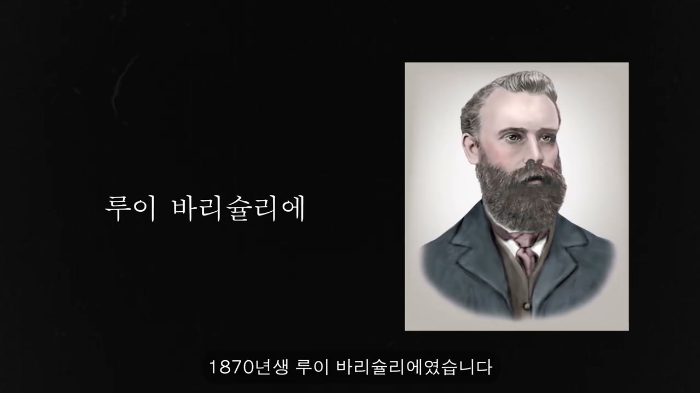
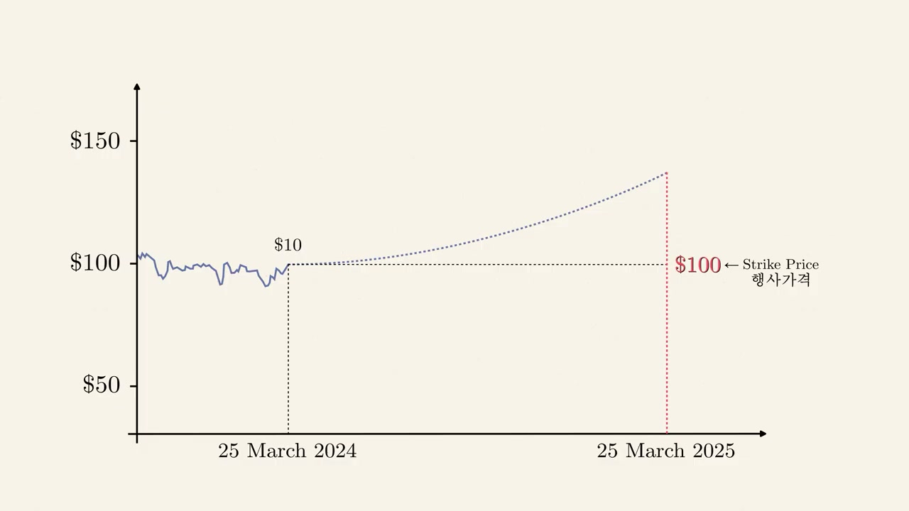
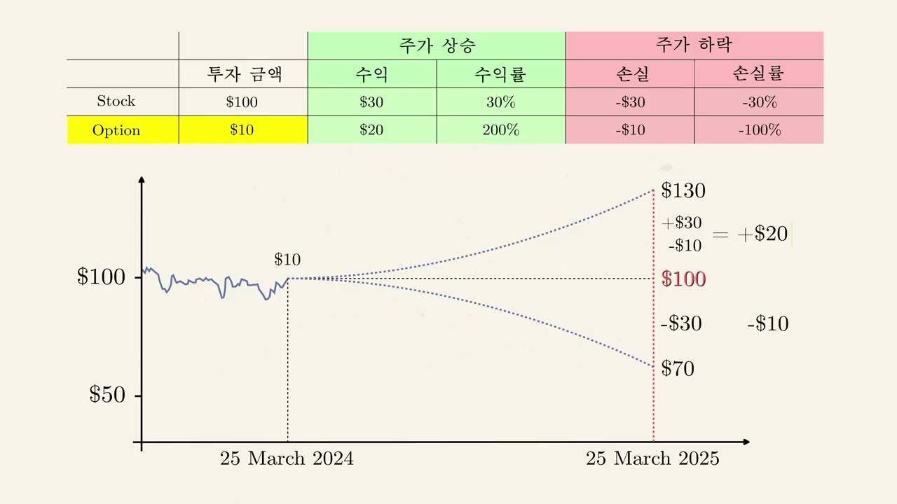
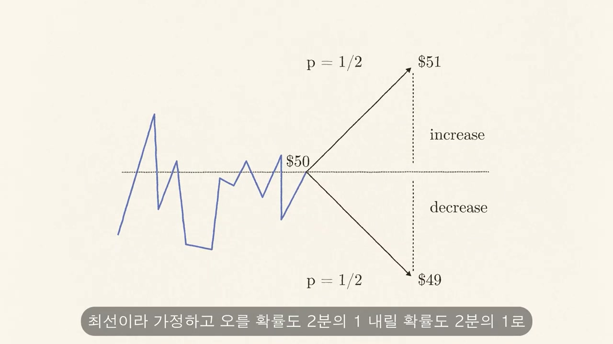
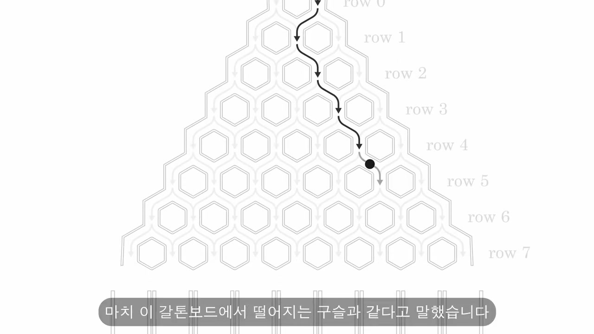
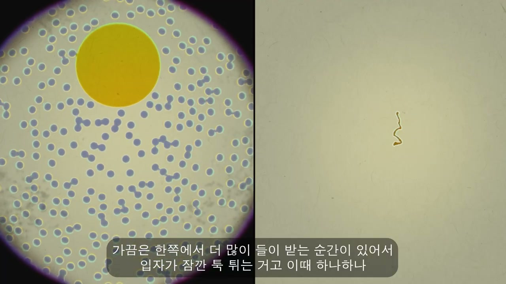
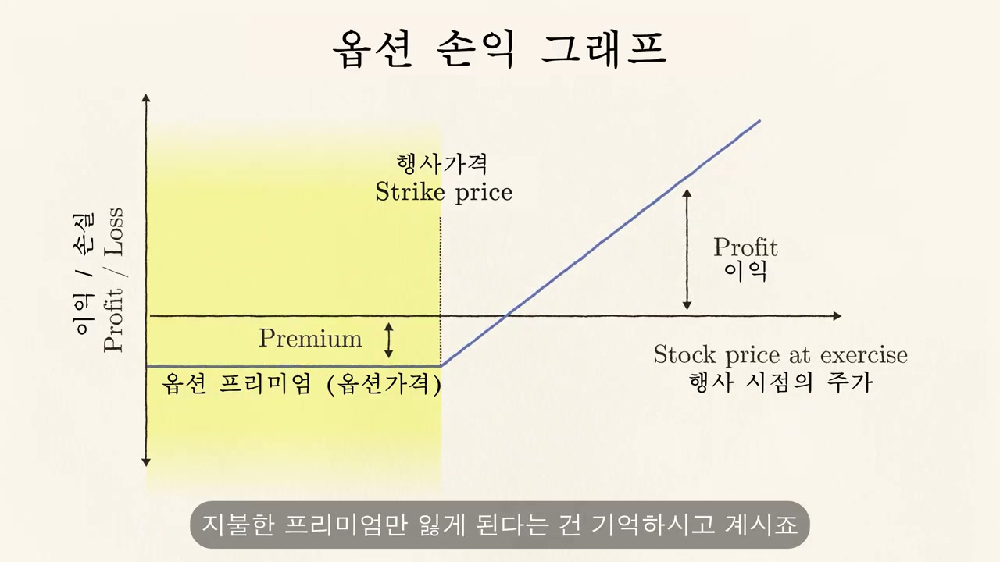

이 글은 전체 2편 중 1편입니다. 긴 영상을 주제 흐름에 맞춰 나누어 정리했습니다.
이 글은 전체 2편 중 1편입니다.
채널: Veritasium 한국어 - 베리타시움 | 길이: 30:58 | 날짜: 2026-06-22
분석 범위: 0:00-15:07, 전체 2편 중 1편
영상은 어떤 방정식이 “얼마짜리”인지 묻는 방식으로 수학과 돈의 관계를 정면으로 제시한다. 이 방정식은 물리학에서 원자, 열 이동, 확산을 설명하는 데 쓰였고, 금융에서는 주가와 옵션 가격을 다루는 도구가 되었다. 도입부가 강조하는 것은 수식이 단순히 이론에 머무르지 않고, 실제 시장에서 막대한 가치를 만들 수 있다는 점이다. 짐 사이먼스와 메달리온 펀드는 그 현대적 증거로 배치된다.
짐 사이먼스는 1988년 메달리온 투자 펀드를 세운 수학 교수로 소개된다. 이후 30년 동안 메달리온 펀드는 시장 평균보다 높은 수익률을 냈고, 영상은 그 수익률을 연 66%라고 설명한다. 이 정도 복리 수익률은 작은 원금도 장기적으로 엄청난 규모로 키우는 힘을 갖는다. 그러나 영상은 곧바로 “수학을 잘하면 모두 돈을 잘 버는가?”라는 질문으로 전환한다.
아이작 뉴턴은 1720년에 77세였고 이미 부자였다. 그는 케임브리지 대학 교수로 오래 일했고 영국 왕립 조폐국장도 맡았으며, 재산은 3만 파운드로 오늘날 돈으로 약 100억 원 수준으로 소개된다. 뉴턴은 남해회사 주식에 투자했는데, 이 회사는 노예로 팔려간 아프리카인들을 대서양 건너로 실어 나르는 사업과 연결되어 있었다. 주가가 두 배가 되자 그는 1720년 4월에 팔았지만, 주가가 계속 오르자 6월에 다시 들어가 고점까지 계속 샀고 하락이 시작되어도 팔지 못했다.

뉴턴은 하락장에서 “떨어졌을 때 사야 한다”며 더 샀지만, 결국 큰 손실을 보았다. 그가 왜 미리 예측하지 못했느냐는 질문에 대해 영상은 “천체의 운동은 계산할 수 있지만 사람들의 광기는 계산할 수 없다”는 유명한 취지의 답을 소개한다. 이 말은 금융시장이 자연법칙처럼 단순히 계산되는 영역이 아니라는 점을 보여준다. 다음 인물인 루이 바슐리에는 바로 이 난점을 수학적으로 다루려 한 사람이다.
바슐리에는 1870년에 태어났고, 18세에 부모를 모두 잃은 뒤 아버지의 와인 사업을 떠맡았다. 몇 년 뒤 사업을 정리하고 파리로 가 물리학을 공부했으며, 생계를 위해 파리 증권거래소에 들어갔다. 그곳은 수백 명이 호가를 외치고 손짓으로 신호를 주고받으며 거래가 순식간에 체결되는 혼란스러운 공간이었다. 바슐리에는 이 복잡한 현장에서 특히 옵션이라는 계약에 관심을 갖게 된다.
가장 오래된 옵션 기록은 기원전 600년경 밀레토스 출신 철학자 탈레스의 사례로 설명된다. 탈레스는 여름에 올리브가 풍년일 것이라고 예상했지만, 당장 올리브 압착기를 살 돈은 없었다. 그는 압착기 주인들을 찾아가 여름에 미리 약속한 가격으로 기계를 빌릴 권리를 적은 돈으로 확보했다. 실제로 올리브가 많이 열려 압착기 수요가 급증하자, 그는 약속한 낮은 가격으로 기계를 빌린 뒤 남들에게 더 비싸게 빌려주어 차익을 챙겼다.
탈레스 사례는 나중에 정해진 가격으로 살 수 있는 권리인 콜옵션의 원형이다. 콜옵션은 권리만 주고 의무는 주지 않기 때문에, 사는 쪽은 불리하면 행사하지 않으면 된다. 반대로 풋옵션은 정해진 행사가격으로 나중에 팔 수 있는 권리다. 가격이 오를 것 같으면 콜옵션, 가격이 떨어질 것 같으면 풋옵션을 사는 식으로 방향성에 베팅할 수 있다.

영상은 애플 주식이 현재 100달러이고 앞으로 오를 것이라고 예상하는 경우를 예로 든다. 이때 10달러만 내고 1년 뒤 애플 주식을 100달러에 살 수 있는 권리, 즉 콜옵션을 산다. 여기서 100달러는 행사가격이고, 10달러는 옵션 프리미엄이다. 미국식 옵션은 만기일까지 언제든 행사할 수 있고 유럽식 옵션은 만기일에만 행사할 수 있는데, 설명을 단순하게 하기 위해 유럽형 옵션을 기준으로 삼는다.
1년 뒤 주가가 130달러가 되면 옵션을 행사해 100달러에 사고 바로 130달러에 팔 수 있다. 차익은 30달러지만 프리미엄 10달러를 냈으므로 순이익은 20달러가 된다. 반대로 주가가 70달러로 떨어지면 100달러에 살 이유가 없으므로 옵션을 행사하지 않고 프리미엄 10달러만 잃는다. 손익 그래프는 행사가격 아래에서는 손실이 프리미엄으로 제한되고, 행사가격을 넘은 뒤에는 주가 상승분에서 프리미엄을 뺀 만큼 이익이 커지는 구조를 보여준다.

주식을 직접 100달러에 샀다면 주가가 130달러가 될 때 수익은 30달러, 수익률은 30%다. 옵션을 10달러에 샀다면 같은 주가 상승에서 순이익은 20달러이고, 투자금 대비 수익률은 200%가 된다. 반면 주식이 70달러로 떨어지면 직접 주식 매수자는 30달러, 즉 30% 손실을 보지만 옵션 매수자는 10달러 전액을 잃는다. 옵션은 손실 금액이 프리미엄으로 제한된다는 장점과 원금 100% 손실 가능성이 동시에 존재한다.
옵션은 손실 제한, 레버리지, 위험 헤지 같은 장점이 있지만 바슐리에가 본 거래 현장은 매우 혼란스러웠다. 주식 옵션 가격 이야기가 나오면 거래소는 난리가 났고, 누구도 합리적인 가격을 명확히 제시하지 못했다. 바슐리에는 확률에 관심이 많았기 때문에 이 문제를 수학으로 풀 수 있다고 보았다. 그는 지도교수 앙리 푸앵카레에게 금융을 박사논문 주제로 삼겠다고 제안했고, 당시 금융수학 연구가 거의 없었음에도 승인을 받았다.

옵션 가격을 정확히 매기려면 먼저 시간이 지남에 따라 주가가 어떻게 움직이는지 알아야 한다. 바슐리에는 주가가 사려는 사람과 팔려는 사람의 줄다리기로 결정된다고 보았다. 날씨, 정치, 새로운 경쟁자, 기술 혁신 등 변수가 너무 많기 때문에 모든 요인을 맞히는 것은 거의 불가능하다고 판단했다. 그래서 어떤 순간에도 주가가 오를 확률과 내릴 확률을 각각 1/2로 두는 무작위 보행, 즉 랜덤워크 가정을 택했다.
영상은 효율적 시장에서는 예측 가능한 수익 기회가 즉시 사라진다고 설명한다. 내일 주가가 오를 것이라는 신호가 있다면 사람들은 오늘 그 주식을 사서 수익을 내려고 할 것이고, 그 매수 자체가 오늘 가격을 올린다. 그러면 내일의 상승 신호는 더 이상 남아 있지 않다. 합리적 기대가 가격에 빠르게 반영되기 때문에, 가격 변동을 안정적으로 예측할 수 없다는 것이 효율적 시장 가설의 핵심이다.

갈턴 보드는 랜덤워크가 어떻게 예측 가능한 분포를 만드는지 보여준다. 약 6,000개의 작은 구슬이 삼각형으로 배열된 못들을 지나가며, 각 못에 부딪힐 때마다 왼쪽 또는 오른쪽으로 갈 확률은 50%다. 개별 구슬의 경로는 예측할 수 없지만, 전체 구슬은 언제나 가운데가 가장 많고 양끝으로 갈수록 적어지는 정규분포를 만든다. 바슐리에는 주가의 움직임도 개별 경로는 모르지만, 미래 가격의 확률분포는 계산할 수 있다고 본다.
바슐리에는 주가가 갈턴 보드에서 떨어지는 구슬과 같다고 설명했다. 아래로 떨어지는 방향을 시간이라고 보면, 짧은 시간 동안에는 주가가 위아래로 조금만 움직일 가능성이 크다. 시간이 많이 지나면 가능한 가격 범위가 훨씬 넓어지고, 미래 가격 분포는 현재가를 중심으로 퍼진 정규분포가 된다. 이때 중요한 것은 특정 가격을 맞히는 것이 아니라, 가능한 결과들의 확률분포를 계산하는 것이다.
주가의 미래 분포가 시간이 지날수록 퍼지는 과정은 열이 높은 곳에서 낮은 곳으로 퍼지는 과정과 같은 수학적 구조를 갖는다. 영상은 이 방정식이 1822년 조제프 푸리에가 처음 밝힌 방정식이라고 설명한다. 바슐리에는 주식 가격 예측을 하려다가 이 방정식을 다시 만나게 되었고, 이를 방사 방향 확률분포로 해석했다. 다만 그가 금융을 다루고 있었기 때문에 당시 물리학계는 그의 작업을 크게 주목하지 않았다.

1827년 스코틀랜드 식물학자 로버트 브라운은 현미경으로 꽃가루를 보다가 물 위의 작은 입자들이 제멋대로 움직이는 것을 발견했다. 처음에는 꽃가루가 살아 있기 때문일 수 있다고 생각했지만, 용암에서 나온 먼지나 운석 가루처럼 살아 있지 않은 입자도 똑같이 움직였다. 결국 브라운은 충분히 작은 입자라면 무엇이든 무작위로 움직인다는 사실을 확인했다. 이 현상이 브라운 운동이다.

브라운 운동의 원인은 약 80년 동안 수수께끼로 남아 있다가 1905년 아인슈타인이 설명했다. 당시 기체와 액체가 분자로 이루어졌다는 생각은 점점 퍼지고 있었지만, 분자가 물리적으로 실제 존재한다고 확신한 사람은 많지 않았다. 아인슈타인은 브라운 운동이 작은 입자에 수조 개의 분자가 사방에서 들이받기 때문에 생긴다고 가정했다. 어느 순간 한쪽에서 더 많이 충돌하면 입자가 잠깐 튀고, 개별 충돌은 예측할 수 없지만 전체 위치 분포는 정규분포를 따른다.
물이 가만히 있어도 미세한 입자들이 저절로 퍼져나가는 현상이 확산이다. 바슐리에가 주가와 옵션 가격을 설명하는 데 사용한 수학은, 브라운 운동과 확산을 설명하는 수학과 같은 계열에 놓인다. 작은 입자의 위치, 열의 이동, 주가의 미래 가능성은 모두 “개별 경로는 예측하기 어렵지만 전체 확률분포는 계산할 수 있다”는 구조를 공유한다. 영상의 큰 주장은 바로 이 공통 수학이 물리학과 금융을 동시에 관통했다는 것이다.
바슐리에는 박사과정에서 옵션 가격을 어떻게 정해야 하는지 수학적으로 풀어냈다. 만기 때 주가가 행사가격보다 낮으면 매수자는 프리미엄만 잃고, 주가가 행사가격보다 높으면 차익을 얻으며, 상승폭이 프리미엄보다 클 때 순이익이 생긴다. 그는 가능한 모든 결과에 대해 그 결과의 이익 또는 손실에 확률을 곱해 합산함으로써 기대수익을 계산했다. 옵션 가격이 너무 비싸면 아무도 사지 않고, 너무 싸면 모두 사려 하므로, 공정한 가격은 매수자와 매도자의 기대수익을 같게 만드는 가격이어야 한다고 주장했다.
“천체의 운동은 계산할 수 있지만, 사람들의 광기는 계산할 수 없다.”
“주가는 사려는 사람과 팔려는 사람의 줄다리기로 결정된다.”
“예측 행위 자체가 미래 결과에 영향을 준다.”
“개별 구슬의 경로는 예측하기 어렵지만, 전체는 예측 가능한 패턴을 만든다.”
“공정한 가격은 매수자와 매도자의 기대수익을 같게 만드는 가격이다.”
이 1편의 핵심은 금융시장을 “맞히는” 문제가 아니라 “분포로 계산하는” 문제로 바꾼 전환이다. 뉴턴은 인간 군중의 광기를 예측하지 못했지만, 바슐리에는 예측 불가능성을 인정하고 확률분포로 다루는 길을 열었다. 옵션 가격, 랜덤워크, 정규분포, 브라운 운동, 확산 방정식은 모두 같은 수학적 구조로 연결된다. 마지막에는 바슐리에의 논문이 아인슈타인보다 먼저 랜덤워크를 제시했고 옵션 거래자들이 풀지 못한 문제까지 해결했지만, 당시에는 거의 이해받지 못했다는 점을 짚은 뒤 1950년대 젊은 물리학자 에드 소프와 라스베이거스 이야기로 다음 편을 예고한다.
댓글
GitHub 이슈 기반 댓글 시스템입니다.